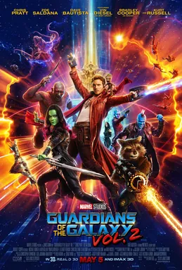

The genetics
Heredity drives the plot. Peter's half-Celestial inheritance is what makes him valuable to Ego, who has fathered children on many worlds, had them collected and killed every one who failed to inherit his powers: a lethal selection for a single inherited trait. The Sovereign, a genetically engineered people obsessed with physical and mental perfection, and Rocket, an engineered raccoon, add genetic engineering in the background. The film's real subject is fatherhood, and it favours nurture: Peter's biological father turns out to be a monster, while Yondu, the rough pirate who raised him and kept him from Ego, proves to be his true father. As the film magazine FilmInk put it, 'nurture has truly won out over nature'. Peter loses his inherited powers when Ego dies but keeps what Yondu taught him. The biology is pure fantasy: a human cannot have a child with a planet-sized being.
How genetics is portrayed
- Overall portrayal of genetics
- negative Breeding and selection for an inherited power are the core of the villain's monstrous plan, and engineered perfection marks the vain Sovereign. The film resolves the story by rejecting biological inheritance in favour of the father who raised Peter.
- Outcome of the genetic intervention
- negative Ego's selection of his offspring by an inherited trait has killed countless children, and Peter's inherited power, once tapped, starts the seedlings consuming worlds; it ends only with Ego's destruction and Yondu's death.
- Ego
- villain Aim: power (negative). Ego fathers children across the galaxy, has them collected and kills every one who fails to inherit his Celestial power, so that he can use an heir's power to turn thousands of worlds into extensions of himself. The film reveals him as a murderer of his children and of Peter's mother, and the heroes destroy him.
- The Sovereign (High Priestess Ayesha)
- villain Aim: ideological (negative). The Sovereign are a genetically engineered people bent on physical and mental perfection, and their leader Ayesha hunts the Guardians over a theft. The film plays them as vain, humourless antagonists; their engineering is background, not shown being done.
The story
The Guardians of the Galaxy flee the Sovereign, a golden, genetically engineered people whose high priestess Ayesha they anger when Rocket steals valuable batteries. They are rescued by Ego, a godlike being who reveals that he is Peter Quill's father and takes Peter, Gamora and Drax to his planet, while Ayesha hires Yondu, the space pirate who raised Peter, to capture the others. Ego, a Celestial whose planet is an extension of himself, teaches Peter to use the powers he has inherited, then reveals his plan: he has planted seedlings on thousands of worlds to transform them into himself, which needs the power of two Celestials. He fathered countless children across the galaxy, killed all who lacked his power, and gave Peter's mother the tumour that killed her. The reunited Guardians destroy Ego, and Yondu dies saving Peter.